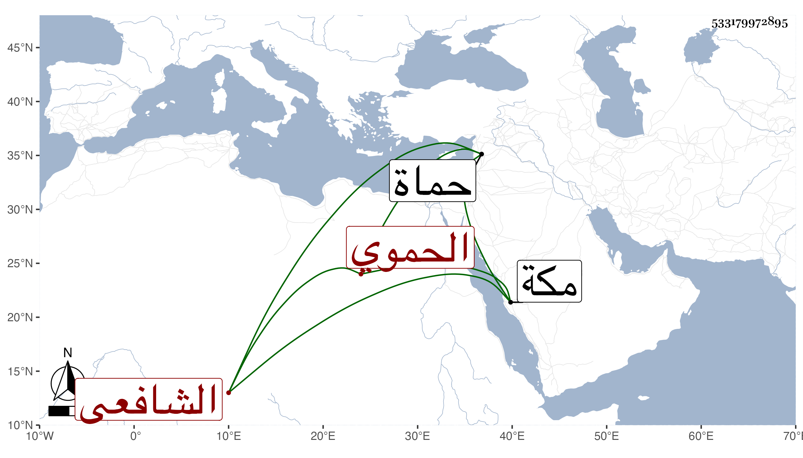

0902Sakhawi.DawLamic.ITO20230111-ara1.EIS1600.533179972895
Biography ID: 533179972895
410
عمر بن محمد بن محمد بن هبة الله بن عمر بن إبراهيم السراج بن الصدر بن ناصر الدين الحموي الشافعي الآتي أبوه وجده ويعرف كسلفه بابن البارزي . ولد في ثاني عشر جمادى الأولى سنة أربع وأربعين وثمانمائة بحماة ونشأ بها فحفظ القرآن وغيره واشتغل قليلا وباشر كتابة سر بلده من حياة والده ثم قضاءها ثم أعرض عن ذلك ولقيته بمكة حين مجاورته بها أيضا في سنة سبع وثمانين هو وولده عبد الباسط فأخذ عني يسيرا .
